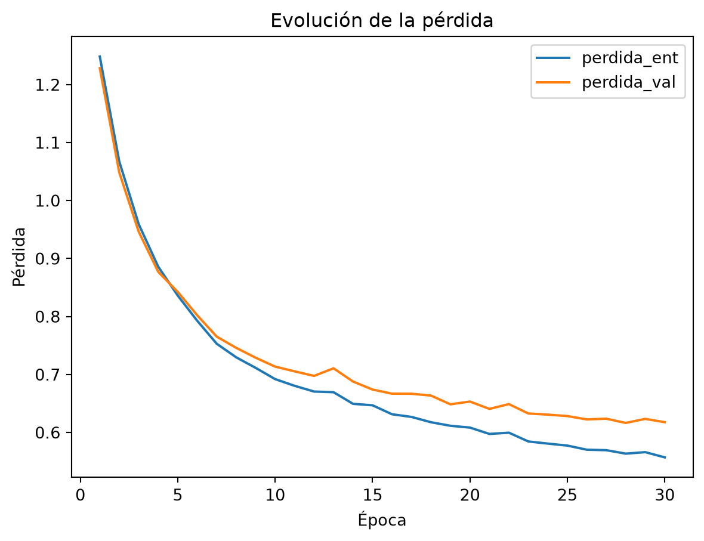
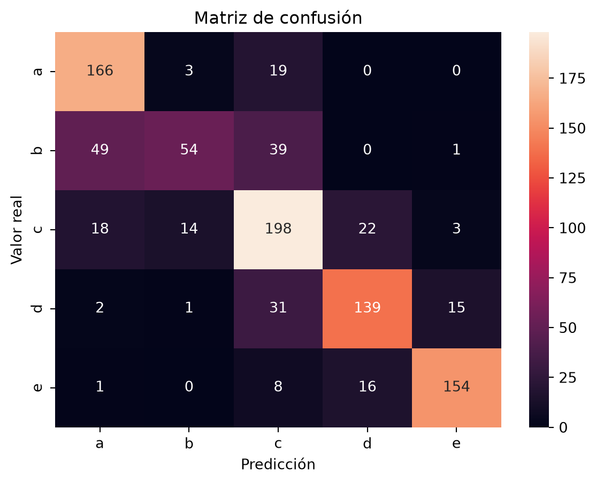

import pandas as pd
import matplotlib.pyplot as plt
import seaborn as sns
from sklearn.metrics import confusion_matrix
from src.red import preparar_datos, crear_red, entrenar, evaluarModelo
Preparación de los datos
En esta primera parte se preparan los datos que utilizará la red neuronal. El conjunto se divide en entrenamiento, validación y test. El entrenamiento se utiliza para ajustar los pesos de la red, la validación para comprobar su comportamiento y tomar decisiones sobre la configuración, y el test queda reservado para la evaluación final del proyecto.
Este bloque importa las librerías que utilizaremos para trabajar con los datos, representar gráficos y evaluar el modelo, además de las funciones ya definidas en src/red.py.
Las cuatro funciones del modelo están en src/red.py, porque las usan tanto esta página como la de experimentos. Para que se vea cómo están hechas, mostramos el código de cada una justo antes de utilizarla. Esta es preparar_datos:
def preparar_datos(ruta):
"""Separa nutrientes (X) y letra (y), divide 70/15/15, escala y pasa a tensores."""
df = pd.read_csv(ruta)
X = df.drop(columns=["nutriscore_grade"]).values
y = df["nutriscore_grade"].map({"a": 0, "b": 1, "c": 2, "d": 3, "e": 4}).values
X_ent, X_resto, y_ent, y_resto = train_test_split(X, y, test_size=0.3, stratify=y, random_state=42)
X_val, X_test, y_val, y_test = train_test_split(X_resto, y_resto, test_size=0.5, stratify=y_resto, random_state=42)
escalador = StandardScaler().fit(X_ent)
X_ent = escalador.transform(X_ent)
X_val = escalador.transform(X_val)
X_test = escalador.transform(X_test)
X_ent = torch.tensor(X_ent, dtype=torch.float32)
X_val = torch.tensor(X_val, dtype=torch.float32)
X_test = torch.tensor(X_test, dtype=torch.float32)
y_ent = torch.tensor(y_ent)
y_val = torch.tensor(y_val)
y_test = torch.tensor(y_test)
return X_ent, y_ent, X_val, y_val, X_test, y_testX_ent, y_ent, X_val, y_val, X_test, y_test = preparar_datos(
"data/processed/productos_limpios.csv"
)
print("Entrenamiento:", len(X_ent))
print("Validación:", len(X_val))
print("Test:", len(X_test))Entrenamiento: 4447
Validación: 953
Test: 954Los datos quedan divididos en 4.447 productos para entrenamiento, 953 para validación y 954 para test. La división se realiza de forma estratificada para conservar aproximadamente la misma proporción de las cinco clases en cada conjunto.
Las variables nutricionales también se escalan para trabajar con magnitudes comparables. El escalador se ajusta únicamente con los datos de entrenamiento. Si utilizara información de validación o test para calcular el escalado, se produciría una fuga de datos, ya que el modelo recibiría indirectamente información de conjuntos que debe considerar desconocidos.
Arquitectura de la red
A continuación se crea la red neuronal que utilizaremos en esta página. La configuración de partida tiene dos capas ocultas de 64 neuronas cada una. La red recibe como entrada los ocho valores nutricionales de cada producto y genera cinco valores de salida, uno por cada categoría del Nutri-Score. La red se monta con crear_red:
def crear_red(capas_ocultas, neuronas):
"""Crea una red nueva: 8 entradas, capas ocultas con ReLU y 5 salidas (una por letra)."""
torch.manual_seed(42)
capas = []
entradas = 8
for _ in range(capas_ocultas):
capas.append(nn.Linear(entradas, neuronas))
capas.append(nn.ReLU())
entradas = neuronas
capas.append(nn.Linear(entradas, 5))
return nn.Sequential(*capas)red = crear_red(capas_ocultas=2, neuronas=64)
redSequential(
(0): Linear(in_features=8, out_features=64, bias=True)
(1): ReLU()
(2): Linear(in_features=64, out_features=64, bias=True)
(3): ReLU()
(4): Linear(in_features=64, out_features=5, bias=True)
)Una neurona recibe varios valores de entrada, multiplica cada uno por un peso aprendido y añade un sesgo o bias. Una capa Linear agrupa varias de estas neuronas y realiza esta transformación sobre los datos que recibe.
La red está formada por tres capas Linear. La primera recibe los 8 nutrientes de cada producto y los transforma en 64 valores, uno por cada neurona de la primera capa oculta. La segunda recibe esos 64 valores y genera otros 64, correspondientes a la segunda capa oculta.
Después de cada capa oculta se aplica la función de activación ReLU, que introduce no linealidad y permite a la red aprender relaciones más complejas. Sin estas activaciones, varias capas lineales consecutivas seguirían siendo equivalentes a una única transformación lineal.
La última capa genera 5 puntuaciones, una por cada posible letra del Nutri-Score: a, b, c, d y e. Estas puntuaciones se denominan logits. No se aplica Softmax al final porque la función de pérdida CrossEntropyLoss trabaja directamente con estos valores y realiza internamente la transformación necesaria.
Entrenamiento
Una vez creada la arquitectura, la red debe aprender a relacionar los ocho valores nutricionales de entrada con las cinco categorías del Nutri-Score. Para ello se entrena durante 30 épocas utilizando lotes de 64 productos y un learning rate de 0,001. Durante el entrenamiento se calcula también la pérdida sobre el conjunto de validación para comprobar cómo evoluciona el modelo con datos que no utiliza para ajustar sus pesos. Todo esto lo hace la función entrenar:
def entrenar(red, X_ent, y_ent, X_val, y_val, batch_size, lr, epocas=30):
"""Ajusta los pesos lote a lote y devuelve la pérdida de cada época."""
cargador = DataLoader(TensorDataset(X_ent, y_ent), batch_size=batch_size, shuffle=True)
optimizador = torch.optim.Adam(red.parameters(), lr=lr)
funcion_perdida = nn.CrossEntropyLoss()
historial = []
for epoca in range(epocas):
for X_lote, y_lote in cargador:
optimizador.zero_grad()
perdida = funcion_perdida(red(X_lote), y_lote)
perdida.backward()
optimizador.step()
with torch.no_grad():
historial.append({
"epoca": epoca + 1,
"perdida_ent": funcion_perdida(red(X_ent), y_ent).item(),
"perdida_val": funcion_perdida(red(X_val), y_val).item(),
})
return pd.DataFrame(historial)historial = entrenar(
red,
X_ent,
y_ent,
X_val,
y_val,
batch_size=64,
lr=0.001,
epocas=30
)
historial.tail()| epoca | perdida_ent | perdida_val | |
|---|---|---|---|
| 25 | 26 | 0.570309 | 0.622550 |
| 26 | 27 | 0.569458 | 0.623757 |
| 27 | 28 | 0.563499 | 0.616455 |
| 28 | 29 | 0.566071 | 0.623466 |
| 29 | 30 | 0.557076 | 0.617748 |
Una época corresponde a un recorrido completo por los 4.447 productos del conjunto de entrenamiento. Como se utiliza un batch_size de 64, los productos se procesan en lotes de 64 y la red actualiza sus parámetros después de cada lote.
El aprendizaje sigue cuatro pasos. Primero, zero_grad() elimina los gradientes calculados en el lote anterior. Después, la red realiza las predicciones y se calcula la pérdida, que mide el error cometido. backward() calcula los gradientes que indican cómo ha contribuido cada parámetro al error. Finalmente, step() modifica los pesos para intentar reducirlo.
El optimizador Adam utiliza esos gradientes para decidir cómo actualizar los parámetros. El learning rate de 0,001 determina el tamaño de esas actualizaciones. Un valor demasiado bajo haría que el aprendizaje fuera muy lento, mientras que uno demasiado alto podría hacer que el entrenamiento fuera inestable.
Al final de las 30 épocas, la pérdida de entrenamiento es 0,557 y la de validación 0,618. La pérdida es menor en entrenamiento porque esos son los datos utilizados para ajustar los pesos de la red. La diferencia entre ambas es pequeña, lo que indica que el modelo generaliza razonablemente bien, aunque aparece un ligero sobreajuste. Las pequeñas oscilaciones entre épocas son normales, ya que los pesos se actualizan por lotes durante el entrenamiento.
Para observar mejor cómo evoluciona el aprendizaje, representamos la pérdida de entrenamiento y la pérdida de validación a lo largo de las 30 épocas. Comparar ambas curvas permite comprobar si la red está aprendiendo y detectar posibles signos de sobreajuste.
historial.plot(
x="epoca",
y=["perdida_ent", "perdida_val"]
)
plt.xlabel("Época")
plt.ylabel("Pérdida")
plt.title("Evolución de la pérdida")
plt.show()
Las dos curvas de pérdida descienden de forma similar durante las 30 épocas, lo que indica que la red está aprendiendo tanto sobre los datos de entrenamiento como sobre datos que no utiliza para ajustar sus pesos. Al principio la pérdida está alrededor de 1,25 y desciende progresivamente hasta 0,557 en entrenamiento y 0,618 en validación.
En las últimas épocas aparece una pequeña separación entre ambas curvas, con algunas oscilaciones en validación. Esto sugiere un ligero sobreajuste, aunque la diferencia sigue siendo reducida.
Evaluación en validación
Una vez entrenada la red, evaluamos su rendimiento sobre el conjunto de validación. Estos datos no se han utilizado para ajustar los pesos del modelo, por lo que permiten comprobar hasta qué punto la red es capaz de generalizar a productos que no ha utilizado para aprender. La nota la calcula evaluar:
def evaluar(red, X, y):
"""Predice la letra de cada producto y devuelve accuracy, F1 macro y predicciones."""
with torch.no_grad():
predicciones = red(X).argmax(dim=1)
accuracy = accuracy_score(y, predicciones)
f1 = f1_score(y, predicciones, average="macro")
return accuracy, f1, prediccionesaccuracy, f1_macro, predicciones = evaluar(
red,
X_val,
y_val
)
print(f"Accuracy: {accuracy:.3f}")
print(f"F1 macro: {f1_macro:.3f}")Accuracy: 0.746
F1 macro: 0.728El modelo obtiene una accuracy de 0,746, por lo que clasifica correctamente aproximadamente el 74,6 % de los productos del conjunto de validación.
El F1 macro es 0,728. Esta métrica calcula el rendimiento de cada una de las cinco clases por separado y después realiza una media dando el mismo peso a todas. Resulta útil para comprobar que el rendimiento global no se debe únicamente a las clases con más productos.
Para analizar en qué clases se equivoca el modelo, utilizamos una matriz de confusión. Las filas representan la categoría real de cada producto y las columnas la categoría predicha por la red. Los valores de la diagonal son los aciertos, mientras que los valores fuera de ella muestran entre qué letras se producen los errores.
matriz = confusion_matrix(y_val, predicciones)
sns.heatmap(
matriz,
annot=True,
fmt="d",
xticklabels=list("abcde"),
yticklabels=list("abcde")
)
plt.xlabel("Predicción")
plt.ylabel("Valor real")
plt.title("Matriz de confusión")
plt.show()
La matriz de confusión muestra que el modelo acierta 711 de los 953 productos de validación. De los 242 errores, 189, aproximadamente un 78 %, se producen entre categorías vecinas. Esto resulta razonable porque las letras del Nutri-Score proceden de una puntuación continua que posteriormente se divide en distintos intervalos, por lo que los productos cercanos a los límites entre categorías pueden ser difíciles de distinguir.
La clase más complicada es la b: de sus 143 productos, la red clasifica correctamente 54, mientras que confunde 49 con la categoría a y 39 con la c. Además de ser la clase con menos ejemplos, se encuentra entre dos categorías vecinas, lo que ayuda a explicar su peor rendimiento.